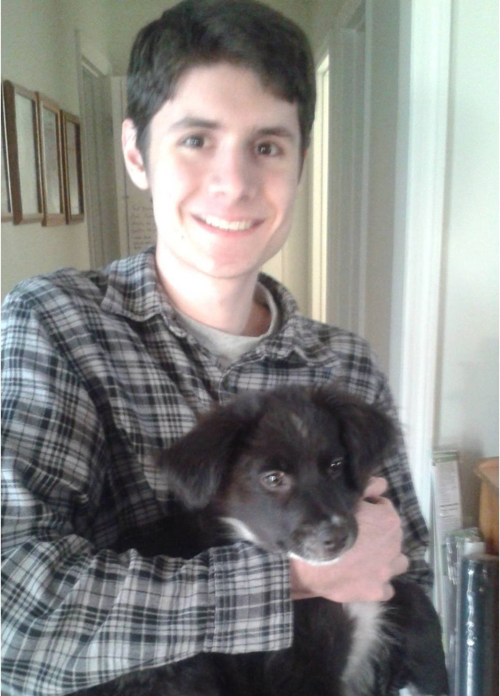

{kind=link}

Popular projects:
- Vera-to-OpenMC: VERA input deck converter and OpenMC core builder (Python 3.5)
- pwr: Toolkit to simplify modeling PWRs in OpenMC (Python 3.5)
- OpenMOC: Open source Method Of Characteristics particle transport code (C++/Python)
|  |
HomepageMy name is Travis Labossiere-Hickman. I am a third-year graduate student at the Massachusetts Institute of Technology, co-president of the MIT American Nuclear Society student section, and part-time PWR neutronics intern at Framatome. I study Nuclear Science & Engineering, specializing in the area of nuclear reactor physics. I earned my undergraduate degree in nuclear engineering at the University of Tennessee, Knoxville. At MIT, I work in the Computational Reactor Physics Group (CRPG) under Dr. Benoit Forget and Dr. Kord Smith. My goal is to contribute to the development of open-source neutronics codes to be used to conduct high-fidelity modeling and simulation of nuclear reactors. My master's project concerns multigroup cross section generation for transient simulations of TREAT (the Transient Reactor Test Facility). One of my past projects was Vera-to-OpenMC, an automated converter of CASL VERA benchmark cases using the Python API of OpenMC. In my spare time, I enjoy reading a good book, playing Civilization, studying foreign languages, traveling abroad, and teaching people about the fascinating field of nuclear energy. |
“Nuclear power is the only long-term, cost-effective, safe, and sustainable solution to the world's growing energy needs.”
View my employment history or contact me about a job offer.
Public MIT files.